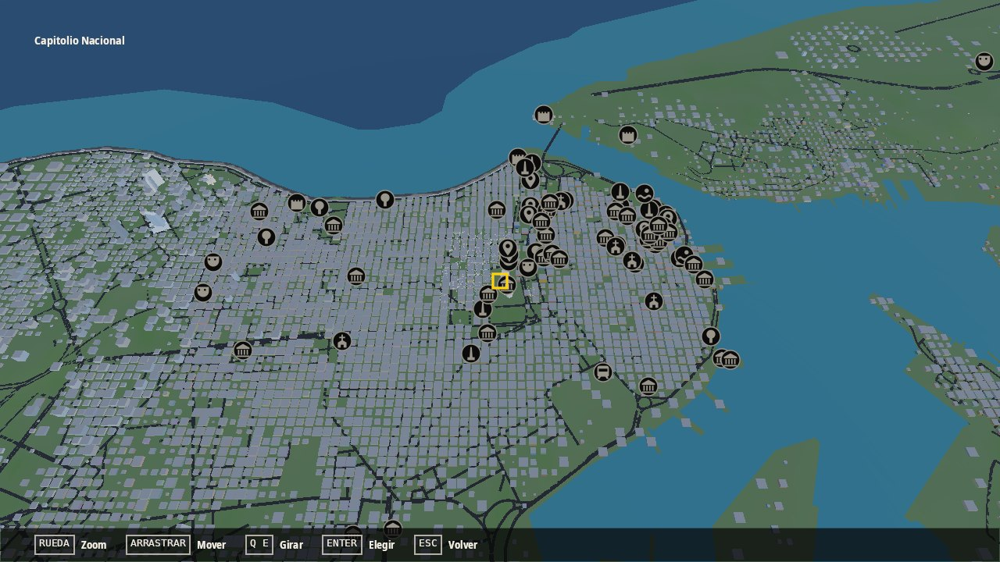
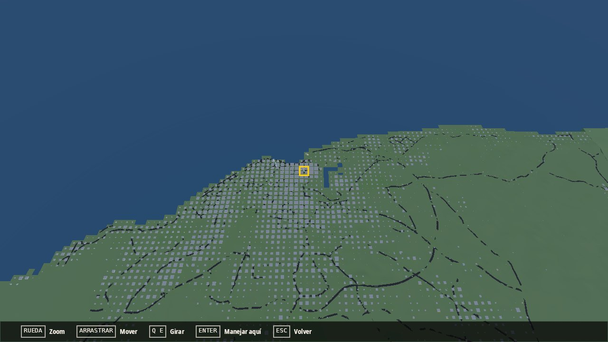

El mapa
Apunta en el mapa.
Maneja ahí.
El mapa es la misma isla que manejas. Aléjate de la cuadra al barrio y del barrio a la provincia, marca un punto, pulsa Enter y el carro aparece en esa calle. Los lugares que importan tienen su icono: el Capitolio, las iglesias, los parques, los hoteles.


